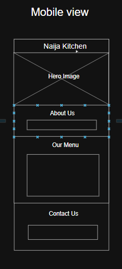

Site Name: Naija Kitchen
Description: The name "Naija Kitchen" reflects both the culture and culinary richness of Nigeria. "Naija" is a colloquial name for Nigeria, and the term is familiar, fun, and welcoming — perfect for a food-centered brand. This name was chosen to be easily recognizable by Nigerians and anyone interested in authentic African cuisine.
Optional Domain: naijakitchen.com
The purpose of the Naija Kitchen website is to promote a small Nigerian restaurant by showcasing its story, menu, contact info, location, and hours. The site will encourage new customers to explore Nigerian food and allow current customers to find quick information about opening hours, dishes, and make inquiries or reservations.
These fonts will be loaded from Google Fonts for web use and are clean and easy to read across devices.
Mobile View
Desktop View